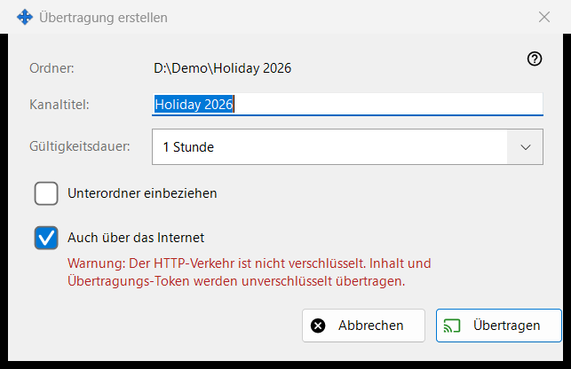
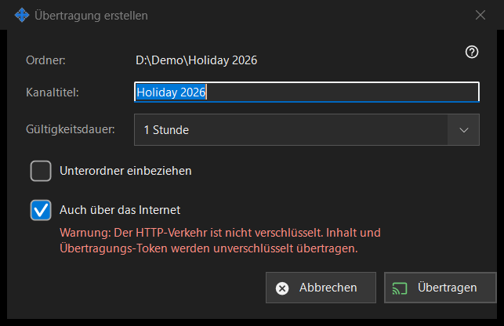

Übertragung erstellen
Verwendungszweck
Richtet eine Übertragung ein, bevor sie erstellt wird: ihren Titel, wie lange sie besteht und ob sie über das lokale Netzwerk hinausreicht. Der Dialog öffnet sich über «Übertragung erstellen..» im Übertragungsfenster für die gewählte Datei oder den gewählten Ordner. Es wird nichts erstellt oder gesendet, bis Sie auf «Übertragen» klicken.


In dieser Reihenfolge
- Prüfen Sie den Pfad in der ersten Zeile (Ordner: oder Datei:).
- Bearbeiten Sie «Kanaltitel:»; er beginnt mit dem Ordner- oder Dateinamen.
- Wählen Sie «Gültigkeitsdauer:».
- Haken Sie bei einem Ordner «Unterordner einbeziehen» an, wenn Sie sie brauchen.
- Lassen Sie «Auch über das Internet» angehakt oder entfernen Sie den Haken.
- Klicken Sie auf «Übertragen» (Enter) oder «Abbrechen» (Escape).
Die Elemente
Titel und Gültigkeitsdauer
Der Kanaltitel ist das, was die Übertragungsliste anzeigt. Die Gültigkeitsdauer bietet 24 Stunden (Standard), 1 Stunde, 7 Tage und «Bis auf Widerruf», das kein Enddatum hat und bestehen bleibt, bis Sie die Übertragung im Übertragungsfenster widerrufen.
Unterordner einbeziehen
Nur sichtbar, wenn das Ziel ein Ordner ist, und standardmäßig aus. Es legt fest, ob Dateien in den Unterordnern des Übertragungsordners einbezogen werden.
Auch über das Internet
Angehakt, sofern die Freigabeeinstellungen Exporte nicht auf das lokale Netzwerk beschränken. Ist es angehakt, enthält der Link neben der lokalen Adresse auch die IPv6- und die per Portweiterleitung erreichbaren Internetadressen dieses PCs, falls sie bekannt sind. Das Anhaken stellt die Gültigkeitsdauer von 24 Stunden auf 1 Stunde um (Sie können sie zurückstellen) und zeigt eine rote Warnung: HTTP-Verkehr ist nicht verschlüsselt, daher werden der Inhalt und das Übertragungs-Token unverschlüsselt übertragen. Jeder, der den Link hat, kann die Übertragungsdateien lesen, bis sie ablaufen oder widerrufen werden. Entfernen Sie den Haken, um die Übertragung im lokalen Netzwerk zu halten.
Übertragen und Abbrechen
«Übertragen» gibt Ihre Auswahl nur an das Übertragungsfenster zurück, das dann die Übertragung erstellt und ihren Link kopiert. «Abbrechen» schließt den Dialog und erstellt nichts.
Managereinstellungen · SFTP-Freigabeeinstellungen · Einstellungen des Austauschservers